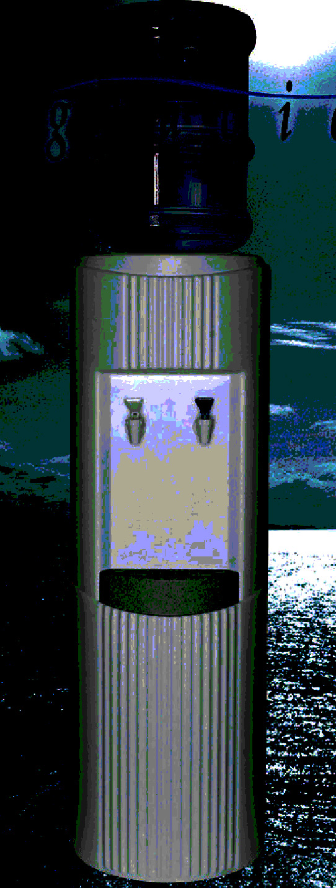

- cpu -
This site and its contents remains the property of Case Modders Australia. . Asia Pacific A galaxy far far away Somewhere else A nut house View Results The Case Modders AustraliaCPU cooler review database Welcome to the Case Modders Australia's CPU cooler review database. We have been scouring the Internet collecting as many CPU cooler review links as possible and located them all in this easy to use database. Here you will be able to find reviews and comparisons for all manner of weird and wonderful CPU coolers making your job of finding them that much easier.
|  |
This site and its contents remains the property of Case Modders Australia. . Asia Pacific A galaxy far far away Somewhere else A nut house View Results The Case Modders AustraliaCPU cooler review database Welcome to the Case Modders Australia's CPU cooler review database. We have been scouring the Internet collecting as many CPU cooler review links as possible and located them all in this easy to use database. Here you will be able to find reviews and comparisons for all manner of weird and wonderful CPU coolers making your job of finding them that much easier.
 |
. I have assembled a group of temperature and performance readings for real-world applications and synthetic benchmarks. What I have found is that while all of the programs help to keep the CPU from running as warm, some of the versions of CPUIdle don't seem to be very effective in keeping the processor cool during file transfers. (The latest versions of CPUIdle use either depending of the mode you choose. There have been reports of different problems associated with each of these programs, ranging from locked up computers (infrequent) to static coming through the system speakers (not uncommon).
 |
. I have assembled a group of temperature and performance readings for real-world applications and synthetic benchmarks. What I have found is that while all of the programs help to keep the CPU from running as warm, some of the versions of CPUIdle don't seem to be very effective in keeping the processor cool during file transfers. (The latest versions of CPUIdle use either depending of the mode you choose. There have been reports of different problems associated with each of these programs, ranging from locked up computers (infrequent) to static coming through the system speakers (not uncommon).
another cpu site: http://www.2fastcpu.com
.